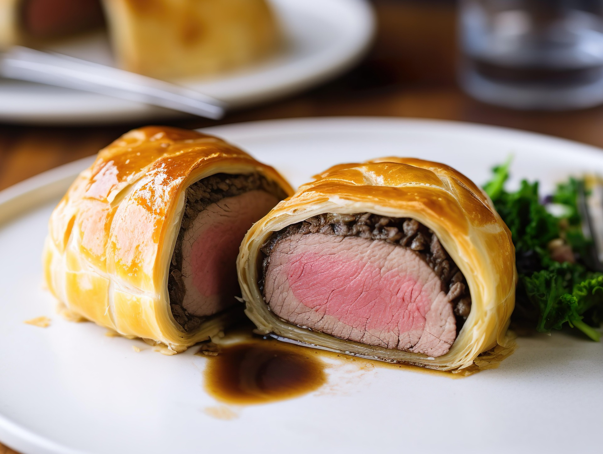

Beef Wellington
O Beef Wellington é um dos pratos mais tradicionais da culinária inglesa. Ele consiste em um filé-mignon envolto por uma camada de cogumelos refogados (duxelles), presunto cru e massa folhada, sendo assado até ficar dourado e crocante.
Ingredientes
• 1 peça de filé-mignon (aproximadamente 1 kg)
• 300 g de cogumelos picados
• 8 a 10 fatias de presunto cru
• 1 pacote de massa folhada
• 2 colheres de sopa de mostarda
• 1 gema de ovo (para pincelar)
• Sal e pimenta-do-reino a gosto
• Azeite ou manteiga para selar a carne
Modo de preparo
1. Tempere o filé-mignon com sal e pimenta e sele todos os lados em uma frigideira bem quente.
2. Passe uma camada de mostarda sobre a carne e reserve.
3. Refogue os cogumelos até que toda a água evapore, formando uma pasta (duxelles).
4. Sobre um filme plástico, disponha as fatias de presunto, espalhe a pasta de cogumelos e enrole o filé, deixando-o bem firme.
5. Envolva a carne com a massa folhada, feche as bordas e pincele com a gema de ovo.
6. Asse em forno preaquecido a 200 °C por cerca de 35 a 45 minutos, ou até que a massa esteja dourada.
7. Deixe descansar por alguns minutos antes de fatiar e servir.